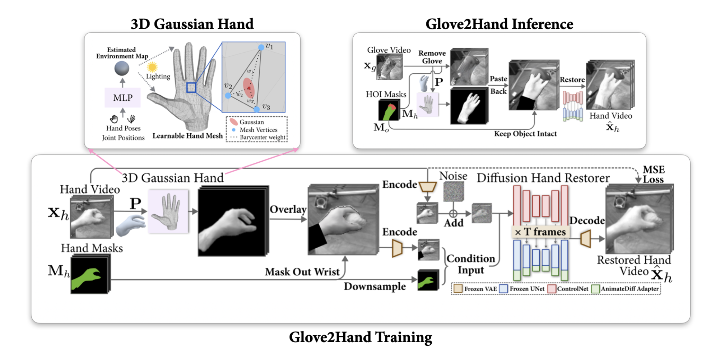

Understanding hand-object interaction (HOI) is fundamental to computer vision, robotics, and AR/VR. However, conventional hand videos often lack essential physical information such as contact forces and motion signals, and are prone to frequent occlusions. To address the challenges, we present Glove2Hand, a framework that translates multi-modal sensing glove HOI videos into photorealistic bare hands, while faithfully preserving the underlying physical interaction dynamics. We introduce a novel 3D Gaussian hand model that ensures temporal rendering consistency. The rendered hand is seamlessly integrated into the scene using a diffusion-based hand restorer, which effectively handles complex hand-object interactions and non-rigid deformations. Leveraging Glove2Hand, we create HandSense, the first multi-modal HOI dataset featuring glove-to-hand videos with synchronized tactile and IMU signals. We demonstrate that HandSense significantly enhances downstream bare-hand applications, including video-based contact estimation and hand tracking under severe occlusion.
